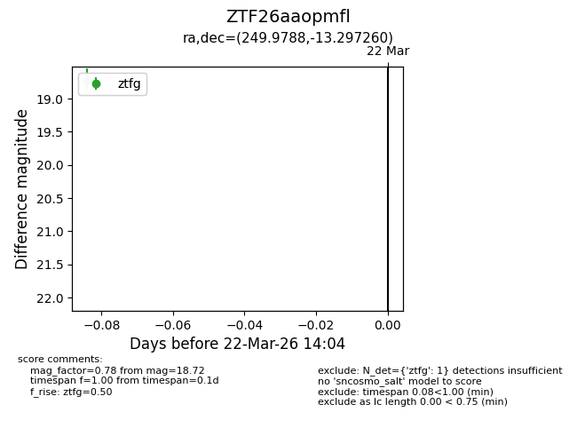
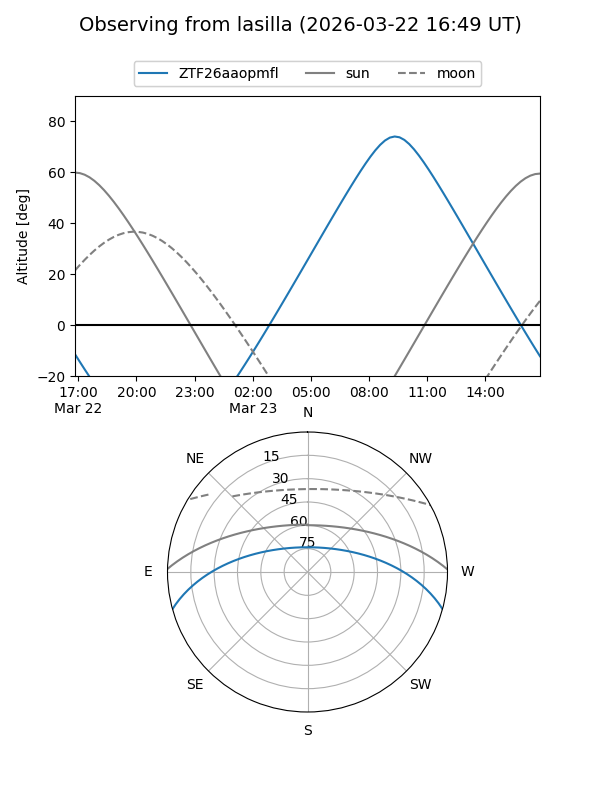
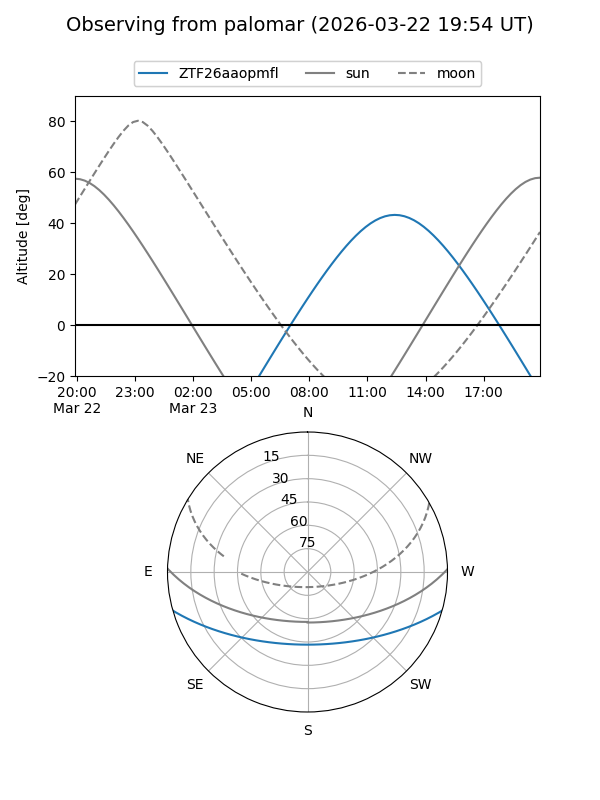

ZTF26aaopmfl
Target ZTF26aaopmfl at 2026-03-22 14:06
Aliases and brokers:
FINK: link
Lasair: link
ALeRCE: link
alt names
ZTF26aaopmfl (ztf,fink_ztf)
Coordinates:
equatorial (ra, dec) = 249.9788,-13.29726
equatorial (HMS+DMS) = 16:39:54.91,-13:17:50.14
galactic (l, b) = (4.3312,+21.42822)
Flags:
Photometry:
last ztfg=18.72
1 ztfg detections
Lightcurve

Visibility


Additional plots